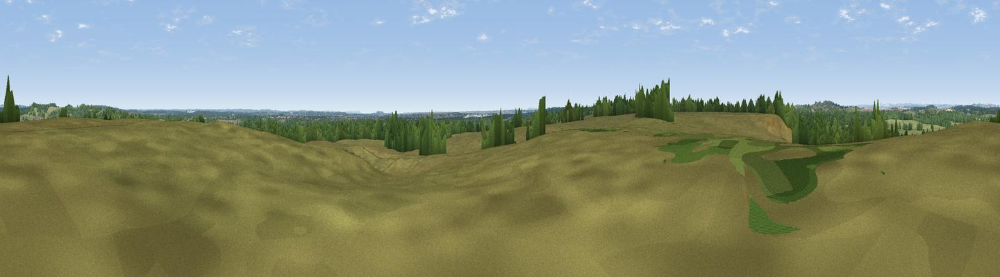

Bull Barrow
#36983 in England · top 66% of its area beats it · near HoltWhere it is
The exact computed spot (SU 05453 04977). Click the marker for map links.
The view, rendered

A 360° render of this exact spot computed from the terrain model, tree cover and land cover — summer colours, afternoon light, calibrated against photographs of famous viewpoints. Real trees, hedges and buildings will differ in detail.
The panorama
Grey silhouette: terrain skyline in each direction (720 bearings, Earth curvature and refraction included). Dashed green: skyline with trees (+15 m) and buildings (+8 m) as obstacles. Blue strip: how far the ground is visible on each bearing.
Where the view opens
Wedge length = distance to the farthest visible ground on that bearing (vegetation-aware). Rings at 10, 25 and 50 km.
What fills the view
66% grassland · 27% woodland · 4% cropland · 3% built-up
Angular shares of the visible panorama (visual magnitude), not map area. Landscape diversity 0.38 (0–1 Shannon).
Key numbers
More beautiful places nearby
The staircase of upgrades: each row has a higher view potential than everything closer. Driving times are estimates from straight-line distance, calibrated against real road routing — check an actual route before setting out.
| Place | Direction | Drive | Score |
|---|---|---|---|
| Viewpoint near Hampreston | SSW · 4 km | ~9 min | 42.1 |
| Chalbury Hill | WNW · 4 km | ~10 min | 56.5 |
| Viewpoint near Merley | SSW · 9 km | ~17 min | 59.5 |
| Viewpoint near Cranborne | N · 12 km | ~22 min | 65.0 |
| Trow Down | NNW · 19 km | ~32 min | 67.5 |
| Monk's Down | NW · 20 km | ~34 min | 74.4 |
| Viewpoint near Berwick St John | NW · 20 km | ~34 min | 78.2 |
| Viewpoint near Studland | S · 24 km | ~39 min | 80.9 |
50.84429, -1.92392 · source: osm peak · position refined by local search. Computed location — check access rights before visiting.